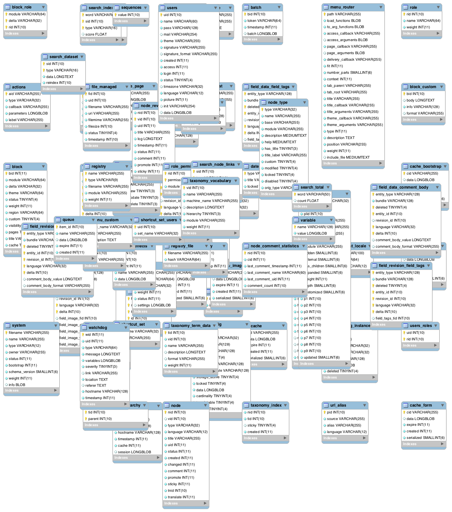
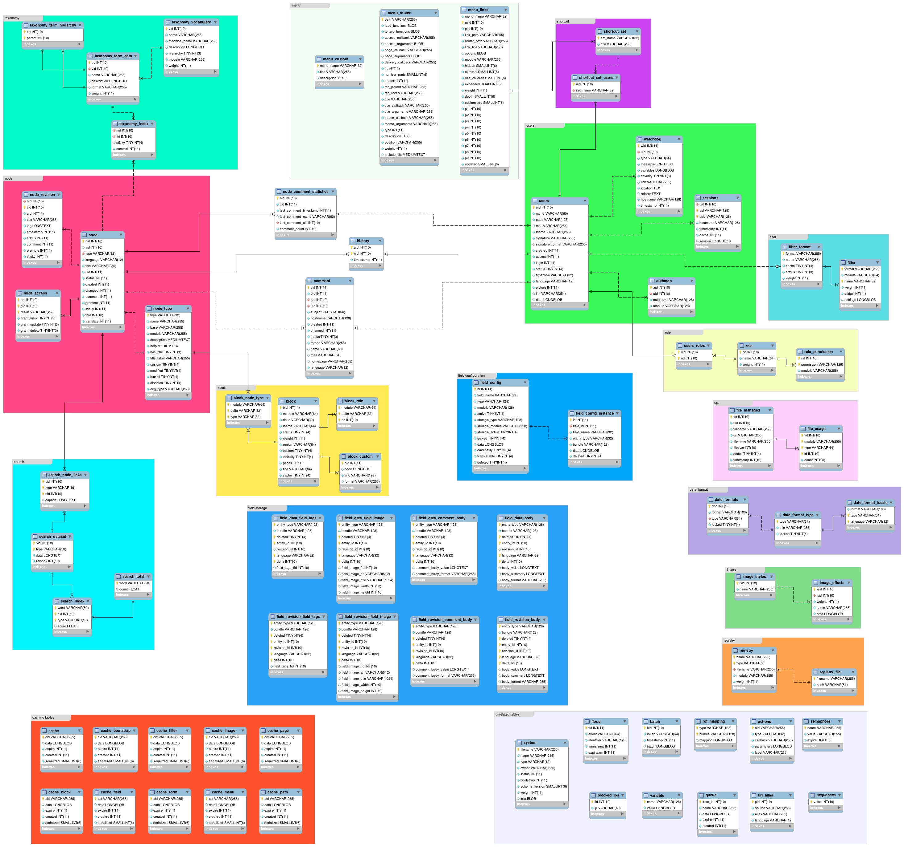
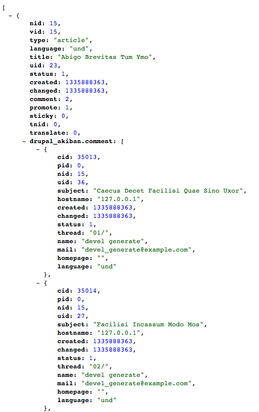
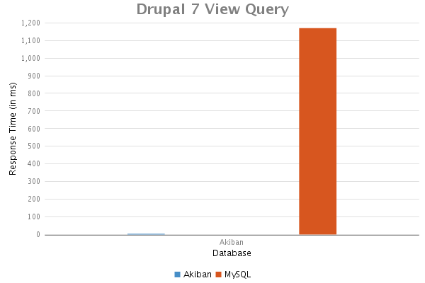
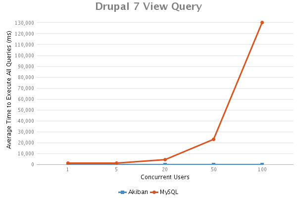

Akiban
Akiban is a new (soon to be fully open source) relational database featuring a unique storage optimization referred to as table grouping.
Table Grouping
Let there be peace in the Vietnam of Computer Science.
Vietnam
Peace
Why Does That Help?
Lots of reasons!
- Joins within a group are essentially "free"
- SQL that you know and love still works
- Retrieve an entire object in 1 request
SELECT ** FROM sometable
Nested Result Sets
sample=> set OutputFormat = 'json';
SET OutputFormat
sample=> select ** from "user" where id = 1;
{"id":1,"name":"posulliv","email":"padraig@akiban.com","sample.photo":[{"id":1,"user_id":1,"state":"PROFILE","date_added":"2012-10-15 17:02:22","path":"URI_FOR_IMAGE_FILE"}],"sample.post":[{"id":1,"user_id":1,"status":"this is a post!","latitude":"51.8968917","longitude":"-8.4863157"},{"id":2,"user_id":1,"status":"at the brog having a pint!","latitude":"51.8975668","longitude":"-8.4725516"}],"sample.role":[{"user_id":1,"role_name":"admin"}]}
(1 row)
sample=>
REST Module
http://ec2-50-17-70-63.compute-1.amazonaws.com:8080/drupal_akiban.node/15

Drupal 7 Example
SELECT DISTINCT node.title AS node_title,
node.nid AS nid,
node_comment_statistics.comment_count AS
node_comment_statistics_comment_count,
node.created AS node_created
FROM node node
INNER JOIN node_comment_statistics node_comment_statistics
ON node.nid = node_comment_statistics.nid
WHERE (( ( node.status = '1' )
AND ( node.comment IN ( '2' ) )
AND ( node.nid >= '111' )
AND ( node_comment_statistics.comment_count >= '2' ) ))
ORDER BY node_created ASC
LIMIT 50 offset 0
Performance
Performance
PRACTICAL MATTERS
In theory, theory and practice are the same. In practice, they are not.
Installation
All that is required is Java!
DevOps!
Connecting from Command Line

$ psql -h localhost -p 15432 test
psql (9.0.5, server 8.4.7)
WARNING: psql version 9.0, server version 8.4.
Some psql features might not work.
Type "help" for help.
test=>
Connecting with Client Drivers
require 'sequel'
require 'pg'
require 'json'
hostname='postgres://localhost:15432/employees'
DB = Sequel.connect(hostname)
Sequel::Postgres.client_min_messages = nil
Sequel::Postgres.force_standard_strings = false
Sequel::Postgres.use_iso_date_format = false
DB << "SET OutputFormat TO 'json'"
ds = DB["SELECT ** FROM employees WHERE emp_no = ?", 10001]
jds = ds.collect {|row| JSON.parse(row[:JSON]) }
require 'pp'
pp jds
jds[0]['employees.titles'][0]['title']
Creating Table Groups
CREATE TABLE table_name
(
...
GROUPING FOREIGN KEY (column_name) REFERENCES parent_table_name
)
ALTER GROUP group_name DROP | ADD TABLE table_nameGroup Indexes
Can contain columns from more than 1 table.
Tables that are in a single branch of a group.
Creating Group Indexes
CREATE INDEX index_name ON table_name
(
column_name,
...
) USING LEFT | RIGHT JOIN
Execution Plans
sample=> explain select * from "user" where id = 1;
OPERATORS
-------------------------------------------------------
Project_Default(user.id, user.name, user.email)
AncestorLookup_Default(Index(user.PRIMARY) -> user)
IndexScan_Default(Index(user.PRIMARY), id = 1)
(3 rows)
sample=>
Adapters for Other Databases
Adapter exists for MySQL.
Working on adapters for other systems - Sybase, PostgreSQL, Oracle, etc.